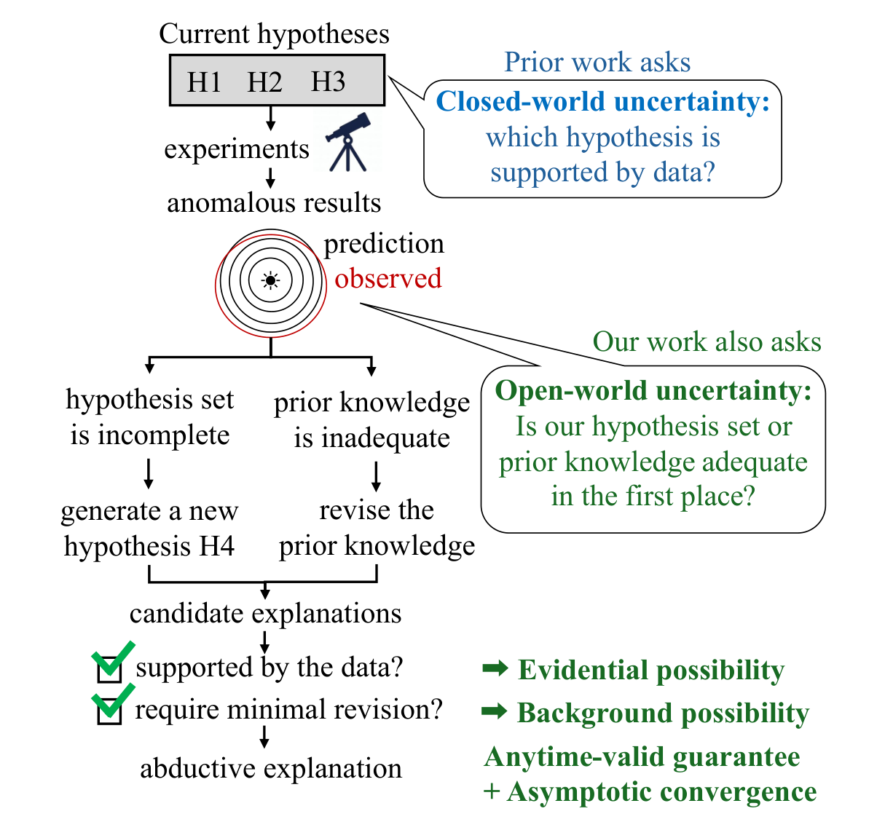
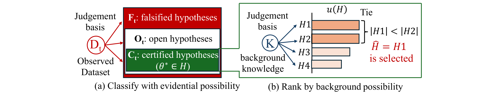
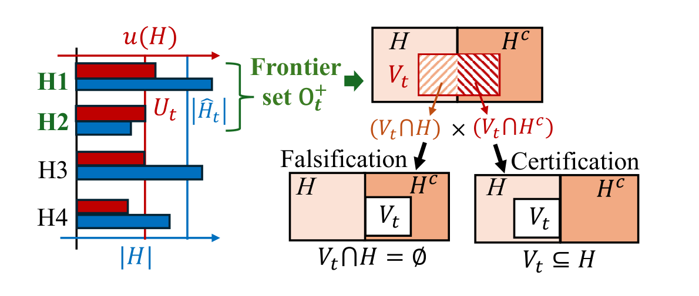
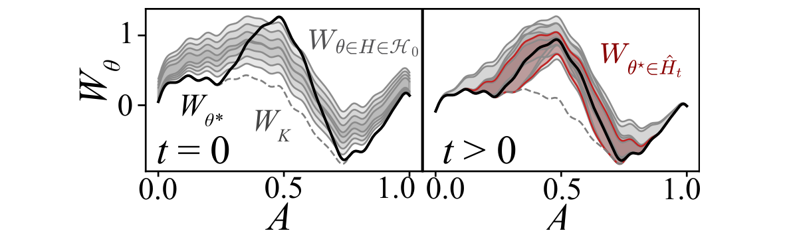
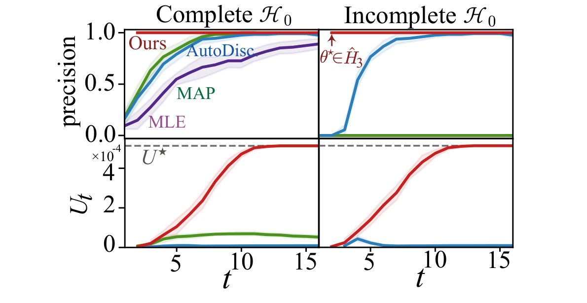
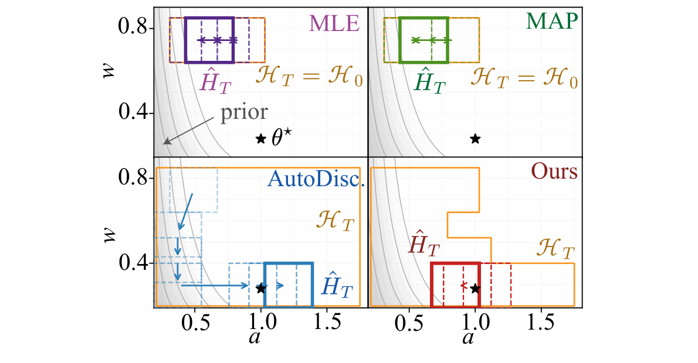
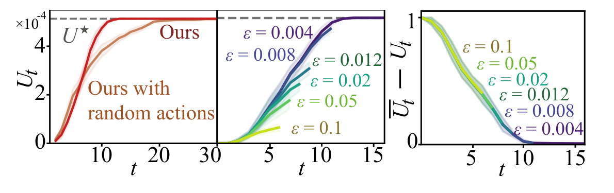
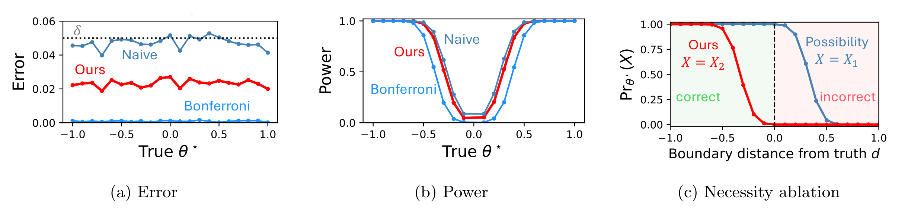
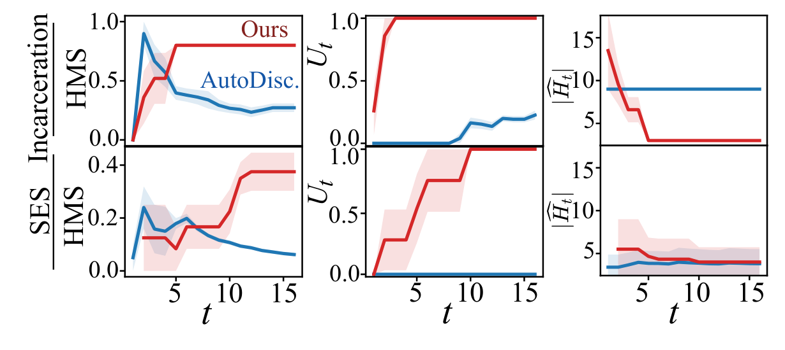

AASD：让科学假设持续扩展，并用可能性推理衡量发现进展
论文原文 ↗Anita Yang、Siu Lun Chau、Tomoya Wakayama、Krikamol Muandet、Masaki Adachi，Open-ended Scientific Discovery with Possibilistic Reasoning，arXiv，2026。论文页面 ·
科学智能体可以根据已有数据挑出一个解释，但当前最好的解释，仍可能只是几个不理想候选中的第一名。发现过程还需要提出新的解释，甚至调整对背景知识的认识。与此同时，实验会持续增加，下一次测什么、何时报告结论，都取决于先前结果。AASD 将这些活动组织为一个开放式发现过程：不断扩展假设，用累积证据检验它们，并以可计算的“溯因效用”衡量研究是否走向更好的解释。

原图 1：异常观测既会推动新假设的生成，也会促使研究者重新考虑背景认识。方法同时考察数据支持与接受解释所需的背景调整。
方法怎么做：把语言解释接到共同的状态证据上
“溯因”是从现象寻找解释。本文进一步偏好那些受到数据支持、又使已有知识调整较小的解释。为把这种偏好变成算法，作者先定义可实验的环境状态：哪些参数可能成立、有哪些测量动作，以及每种状态将产生什么观测。一个假设对应一组允许的状态。
例如，论文将“电导率随温度升高而降低”接到温度—电导率回归斜率上，这个假设就是斜率小于零的状态集合。语言模型提出句子后，实验接口把它转换为这样的集合；语义相同的句子共享表示和已有证据。于是新语言候选可以直接进入持续进行的检验过程。
作者用“可能性”描述当前哪些状态仍与观测相容。它是 0 到 1 的相容程度：数据尚不足以区分时，一个假设和其反面都可以保持较高可能性。随着实验积累，系统用 e-process 更新状态证据。可以把它理解为受到统计约束的序贯证据账户：反证达到门槛，便排除相应状态；历史最强反证被保留下来，使存活状态集合逐渐收缩。
候选由此分成三类：其状态全部被排除时被反驳；候选内外都有存活状态时保持开放；所有存活状态都落在候选内时获得认证。新提出的候选复用同一份状态证据。这个共同证据结构使方法能够随着数据选择实验、生成假设和停止，同时保持任意时刻有效性。在论文的统计条件下，若预设错误风险为 5%，整个过程中错误排除真实状态的概率受到同一水平控制。

原图 2：先将假设分成被反驳、开放和认证三类，再对认证解释比较背景兼容程度；效用相同时优先选择语义更具体的解释。
认证之后，算法还要回答哪个解释更好。背景知识被表示为一套状态兼容评分；一个假设的溯因效用取它允许状态中的最低背景评分。这样，允许严重偏离背景认识的情形会降低效用，而覆盖范围更具体、背景调整较小的解释得到优先。效用相同，再比较假设允许的状态数量，选择更具体的解释。
“可能性前沿搜索”将这一排序与实验设计接起来：智能体提出新候选，保存开放与认证假设，把有希望超过当前最佳认证解释的开放候选列为前沿；再选择能区分候选内外存活状态的实验。算法用 KL 散度衡量不同状态下观测分布的可区分程度，并分配实验动作，让最难区分的状态对也得到信息。新的观测收缩存活集合，前沿随之变化，推动下一轮生成与测量。

原图 3：有潜力改善解释的开放候选进入前沿，实验围绕其内外状态展开，推动候选走向认证或反驳。
论文的合成任务给出了连续例子：背景模型预测一条曲线，实际曲线多出一个局部隆起。状态由隆起幅度和宽度构成，假设是一片参数范围。算法从初始候选出发，挑选测量位置，取得带噪声观测，更新状态证据，再提出新的参数范围；获得认证后，比较背景效用并继续寻找更好的解释。输出的参数范围可以直接与生成数据所用的真实参数比较。

原图 4：黑线与背景虚线的差异来自局部隆起。扩展候选后，搜索可以覆盖初始解释遗漏的真实参数区域。
主要结果：开放搜索、统计有效性与真实数据发现相互连接
在局部隆起任务中，作者分别设置初始候选包含真值和遗漏真值的情形，比较 AASD、固定候选上的最大似然和最大后验方法，以及能够扩展候选的 AutoDiscovery。AASD 在两种初始化下都找到包含真实参数的认证解释，并逐步达到该候选语言中的最佳溯因效用。扩展假设集合解决了“只在旧解释中选冠军”的问题，效用则让搜索在找到真实解释后继续改善。

原图 5：上排比较所报告解释包含真值的比例，下排比较解释效用；左右分别对应初始集合包含和遗漏真值。AASD 将候选扩展与持续改善结合起来。
AutoDiscovery 与 AASD 的区别还在于发现目标：前者偏好相对先验更意外的结果，后者优先选择数据认证、背景代价较小的解释。两者可以走向真值附近，但最后保留的参数范围不同。

原图 7：黑星是真实幅度与宽度，矩形表示探索的假设范围。对比两个算法怎样在真实解释附近继续作取舍。
将测量位置改为随机、保留其他部分后，前沿实验设计更快达到最佳效用。停止容差则提供另一项控制：容差较宽时可以更早结束，较严格时继续缩小当前效用与潜在最佳效用的差距。理论上，作者证明了任意时刻有效性，并在适当条件下渐近达到 ε 最优溯因效用，把发现进展和停止规则联系起来。

原图 6：左图比较前沿实验设计与随机测量，中、右图展示停止容差怎样影响效用和剩余差距。
统计实验进一步比较了多种报告规则。共同状态证据将错误率控制在设定水平，检出能力接近直接挑选，又高于对每个候选分别作 Bonferroni 校正的保守方法。这说明共享证据能够兼顾开放式假设选择与发现真实效应的能力。

原图 10：左图比较错误率，中图比较检出能力，右图说明“候选仍可能成立”和“其相反解释已被排除”两种判定的区别。
真实数据任务使用 DiscoveryBench 的监禁与社会经济数据。智能体提出财富差异等自然语言假设，接口将其映射为可检验的总体统计关系；系统分轮使用数据、执行相应检验并累积证据，再用背景效用组织新一轮搜索。在相同预算下，AASD 最终比 AutoDiscovery 更接近参考发现，并获得较高效用；监禁任务还得到更具体的解释。

原图 8：两行分别为监禁与社会经济任务。参考发现匹配程度、溯因效用和允许状态数量共同展示解释怎样逐步变得贴近目标、兼容背景并更具体。
领域贡献：为开放式科学发现提供进展度量和搜索算法
AASD 将提出解释、检验解释和选择下一次实验连成持续过程。它用可能性理论区分“仍开放”与“已获支持”，用溯因效用表达对背景知识调整的偏好，再让前沿搜索把实验投入有潜力改善解释的方向。这样，科学智能体既可以持续产生新假设，也有了衡量发现进展与决定停止的共同标准。
附：完整原始摘要中文翻译
利用大语言模型开展自主科学发现，需要在证据不断积累时，自适应地生成和检验假设，同时保持统计有效性。已有的任意时刻有效方法能够处理依赖数据的假设，但开放式发现提出了更深层的挑战：已经发现的最佳假设仍可能只是“一组不佳候选中最好的一项”，而更好的解释尚未被发现；与此同时，即使物理定律这类背景知识，也可能需要根据新的发现进行修订。
为应对这一问题，我们利用可能性理论，将问题形式化为溯因式自主科学发现（AASD）。我们提出溯因效用这一可计算的发现进展度量，以及首个用于 AASD 的算法——可能性前沿搜索。该算法保持任意时刻有效性，并在适当条件下渐近达到 ε 最优的溯因效用。在合成和真实科学发现任务上的实验显示了较强的表现。